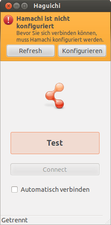
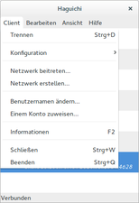
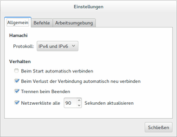
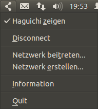

LogMeIn Hamachi
Dieser Artikel wurde für die folgenden Ubuntu-Versionen getestet:
Ubuntu 14.04 Trusty Tahr
Zum Verständnis dieses Artikels sind folgende Seiten hilfreich:
LogMeIn Hamachi  ist ein sogenannter "zero-configuration" (Null-Konfiguration) VPN-Client (Virtual Private Networking), mit dessen Hilfe sich ein virtuelles Netzwerk aufbauen lässt. Daten können so zwischen zwei oder mehr Computern über ein öffentliches Medium wie das Internet ausgetauscht werden, wobei der Datenverkehr getunnelt wird und so für das Transportmedium unsichtbar ist. U.a. ist dadurch die Internetnutzung des Mehrspielermodus von Spielen auch dann möglich, wenn dieser eigentlich auf das lokale Netzwerk beschränkt ist.
ist ein sogenannter "zero-configuration" (Null-Konfiguration) VPN-Client (Virtual Private Networking), mit dessen Hilfe sich ein virtuelles Netzwerk aufbauen lässt. Daten können so zwischen zwei oder mehr Computern über ein öffentliches Medium wie das Internet ausgetauscht werden, wobei der Datenverkehr getunnelt wird und so für das Transportmedium unsichtbar ist. U.a. ist dadurch die Internetnutzung des Mehrspielermodus von Spielen auch dann möglich, wenn dieser eigentlich auf das lokale Netzwerk beschränkt ist.
LogMeIn Hamachi für Linux steht aktuell nur als Betaversion zur Verfügung! Eine leider ebenfalls proprietäre Alternative ist NeoRouter. Wer eine Open-Source-Software sucht, sollte sich RetroShare anschauen, wobei aber ein Spielen über das Netzwerk darüber nicht möglich ist.
Achtung!
LogMeIn Hamachi ist proprietär, der Quelltext steht nicht zur Verfügung. Eine kanadische Firma stellt dabei den Server zur Verfügung, der die dafür notwendigen Daten speichert, darunter auch die IP. Unklar ist, was mit diesen Daten geschieht. Das wird von Kritikern sehr skeptisch angesehen, da die Privatsphäre des einzelnen Nutzers so womöglich nicht gewährleistet werden kann.
Installation¶
Die aktuelle Beta-Version von LogMeIn Hamachi für Linux kann man unter http://vpn.net/linux  als fertiges .deb-Paket herunterladen, welches anschließend manuell installiert werden muss [1].
als fertiges .deb-Paket herunterladen, welches anschließend manuell installiert werden muss [1].
Hinweis!
Fremdpakete können das System gefährden.
Bedienung¶
Im Folgendem wird die Einrichtung über ein Terminal [2] erläutert. Möchte man hingegen eine grafische Oberfläche nutzen, dann kann man den Abschnitt überspringen, denn Haguichi richtet LogMeIn Hamachi automatisch ein.
Ersteinrichtung¶
Damit man LogMeInHamachi später ohne Root-Rechte [3] benutzen kann, muss man mit Root-Rechten die Datei /var/lib/logmein-hamachi/h2-engine-override.cfg mit folgendem Inhalt erstellen [4]:
Ipc.User BENUTZERNAME
Dabei ersetzt man BENUTZERNAME durch den eigenen Benutzername unter Ubuntu. Nach einem Neustart des Dienstes:
sudo service logmein-hamachi restart
kann LogMeIn Hamachi nun ohne Root-Rechte gesteuert werden. Nun meldet man sich das erste Mal am Hauptserver an:
hamachi login
LogMeIn Hamachi wird nun automatisch eingerichtet. Standardmäßig ist der Ubuntu-Benutzername der eigene Nickname, welchen man bei Bedarf mit folgendem Befehl ändern kann:
hamachi set-nick NICKNAME
Nun ist LogMeIn Hamachi vollständig eingerichtet und man kann einem bestehenden Netzwerk beitreten oder ein neues eröffnen.
Befehle¶
Um die Befehlsliste aufzurufen, muss Folgendes im Terminal eingegeben werden:
hamachi ?
Folgende Befehle stehen zur Verfügung:
| Befehlsübersicht | |
| Befehl | Erklärung |
hamachi | Gibt den aktuellen Status, die PID, die eigene Client ID, den Online Status, den Nickname und den verknüpften LogMeIn Account aus. |
hamachi set-nick NICKNAME | Den eigenen Nickname ändern. |
hamachi login hamachi logon | Am LogMeIn Hamachi Server anmelden und das Netzwerk starten. |
hamachi logoff hamachi logout | Vom LogMeIn Hamachi Server abmelden und das Netzwerk abschalten. |
hamachi list | Listet alle Netzwerke auf, in denen man ist. Außerdem werden ausführliche Infos zu anderen Nutzern angezeigt, die in diesen Netzwerken sind. |
hamachi peer CLIENT-ID | Gibt Informationen zu dem Nutzer mit der CLIENT-ID aus. |
hamachi network NETZWERK-ID | Gibt Informationen zum Netzwerk mit der NETZWERK-ID heraus. |
hamachi create NETZWERK-ID [PASSWORT] | Erstellt ein neues Netzwerk mit einem Namen eigener Wahl (NETZWERK-ID) und optional geschützt durch ein PASSWORT. |
hamachi set-pass NETZWERK-ID PASSWORT | Ändert das Passwort des Netzwerks NETZWERK-ID in Passwort (Befehl steht nur für den Besitzer des Netzwerks zur Verfügung). |
hamachi set-access NETZWERK-ID [lock|unlock] [manual|auto] | Legt fest, ob Nutzer erst vom Besitzer des Netzwerkes freigeschaltet werden müssen oder ob sie automatisch beitreten können (Befehl steht nur für den Besitzer des Netzwerks zur Verfügung). |
hamachi delete NETZWERK-ID | Löscht das Netzwerk NETZWERK-ID (Befehl steht nur für den Besitzer des Netzwerks zur Verfügung). |
hamachi evict NETZWERK-ID CLIENT-ID | Wirft den Nutzer CLIENT-ID aus dem Netzwerk NETZWERK-ID (Befehl steht nur für den Besitzer des Netzwerks zur Verfügung). |
hamachi approve NETZWERK-ID CLIENT-ID | Schaltet den Nutzer CLIENT-ID für das Netzwerk NETZWERK-ID frei (Befehl steht nur für den Besitzer des Netzwerks zur Verfügung). |
hamachi reject NETZWERK-ID CLIENT-ID | Weist den Nutzer CLIENT-ID ab und lässt ihn nicht ins Netzwerk NETZWERK-ID (Befehl steht nur für den Besitzer des Netzwerks zur Verfügung). |
hamachi join NETZWERK-ID [PASSWORT] hamachi do-join NETZWERK-ID [PASSWORT] | Beitritt zum Netzwerk NETZWERK-ID, wofür eventuell ein PASSWORT benötigt wird. |
hamachi leave NETZWERK-ID | Verlassen des Netzwerks NETZWERK-ID. |
hamachi go-online NETZWERK-ID | Meldet einen im Netzwerk NETZWERK-ID an. |
hamachi go-offline NETZWERK-ID | Meldet einen im Netzwerk NETZWERK-ID ab. Man bleibt aber in anderen Netzwerken weiter angemeldet. |
hamachi attach LogMeIn-ACCOUNT hamachi attach-net LogMeIn-ACCOUNT | Verbindet den Computer mit einem LogMeIn-ACCOUNT. |
hamachi cancel | Löst die Verbindung zum angegebenen LogMeIn-ACCOUNT. |
hamachi set-ip-mode ipv4 | ipv6 | both | Legt die Art der zu benutzenden IP-Version fest. |
hamachi check-update | Überprüft, ob eine neue Version für LogMeIn Hamachi for Linux BETA verfügbar ist. |
Haguichi¶
Zwar verfügt die Linuxversion von LogMeIn Hamachi über keine offizielle grafische Oberfläche, jedoch gibt es inoffizielle GUIs. Darunter befindet sich Haguichi . Diese steht unter der GPL und ist in Mono geschrieben. Haguichi wird wegen ihres Funktionsumfangs und der guten Integration in Ubuntu empfohlen.
Installation¶
Haguichi ist nicht in den offiziellen Paketquellen enthalten, aber es existiert ein "Personal Package Archiv" PPA [5].
Adresszeile zum Hinzufügen des PPAs:
ppa:webupd8team/haguichi
Hinweis!
Zusätzliche Fremdquellen können das System gefährden.
Ein PPA unterstützt nicht zwangsläufig alle Ubuntu-Versionen. Weitere Informationen sind der  PPA-Beschreibung des Eigentümers/Teams webupd8team zu entnehmen.
PPA-Beschreibung des Eigentümers/Teams webupd8team zu entnehmen.
Damit Pakete aus dem PPA genutzt werden können, müssen die Paketquellen neu eingelesen werden.
Nach dem Aktualisieren der Paketquellen kann man das Programm über die folgenden Pakete installieren [6]:
haguichi (ppa)
haguichi-indicator (ppa)
 mit apturl
mit apturl
Paketliste zum Kopieren:
sudo apt-get install haguichi haguichi-indicator
sudo aptitude install haguichi haguichi-indicator
Einrichten¶
Falls LogMeIn Hamachi noch nicht über das Terminal eingerichtet wurde, dann bietet Haguichi an, dies zu erledigen. Davor kann man mit einem Linksklick  auf den angezeigten Benutzernamen seinen Nickname ändern. Anschließend geht man auf "Konfigurieren" und Haguichi richtet alles automatisch ein. Dabei wird auch die Datei /var/lib/logmein-hamachi/h2-engine-override.cfg erstellt, ohne die Haguichi nicht funktionieren könnte. Nach erfolgreicher Konfiguration kann man sich mit der Schlatfläche "Verbinden" bei LogMeIn Hamachi anmelden.
auf den angezeigten Benutzernamen seinen Nickname ändern. Anschließend geht man auf "Konfigurieren" und Haguichi richtet alles automatisch ein. Dabei wird auch die Datei /var/lib/logmein-hamachi/h2-engine-override.cfg erstellt, ohne die Haguichi nicht funktionieren könnte. Nach erfolgreicher Konfiguration kann man sich mit der Schlatfläche "Verbinden" bei LogMeIn Hamachi anmelden.
Bedienung¶
Die Oberfläche ist selbsterklärend.
|  |
| Erster Start |
|  |
| Haguichi Client Einstellungen |
|  |
| Haguichi Einstellungen |
|  |
| Haguichi Appindicator |
- Erstellt mit Inyoka
-
 2004 – 2017 ubuntuusers.de • Einige Rechte vorbehalten
2004 – 2017 ubuntuusers.de • Einige Rechte vorbehalten
Lizenz • Kontakt • Datenschutz • Impressum • Serverstatus -
Serverhousing gespendet von